Restaurant · la cuisine ouverte, telle que choisie
26/11/2026 · le prototype A, et tes deux points
Le prototype A est maintenant le seul dans le script : la cuisine ouverte sur le bar par-dessus
un muret, la retombée avec les verres et les bouteilles suspendus, le comptoir en lattes de chêne. Les rendus de B et
C restent dans rendus/24-cuisine-et-bar/.
1 · Le « couloir ouvert », les portes, le coin de la cuisine
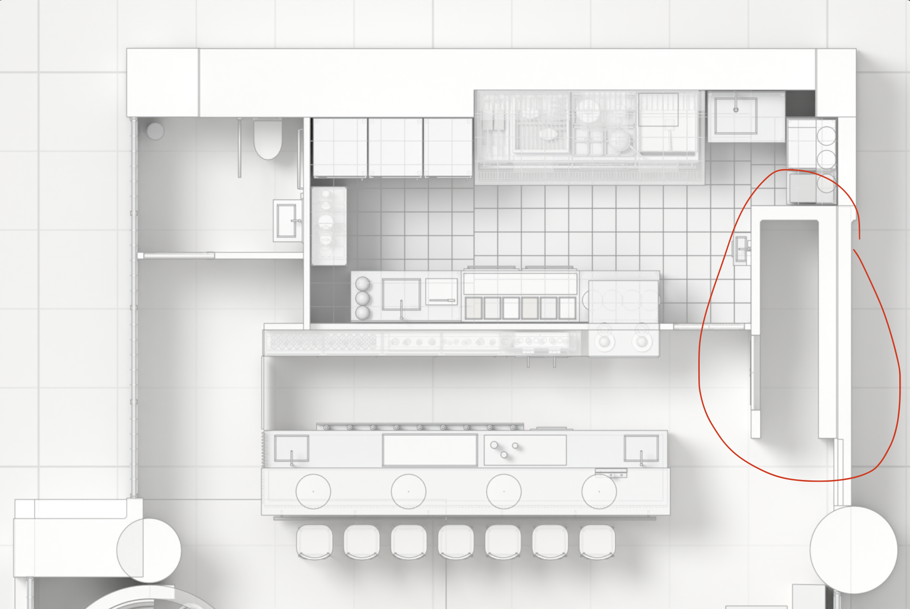
Avant (ta capture) : le couloir ouvert
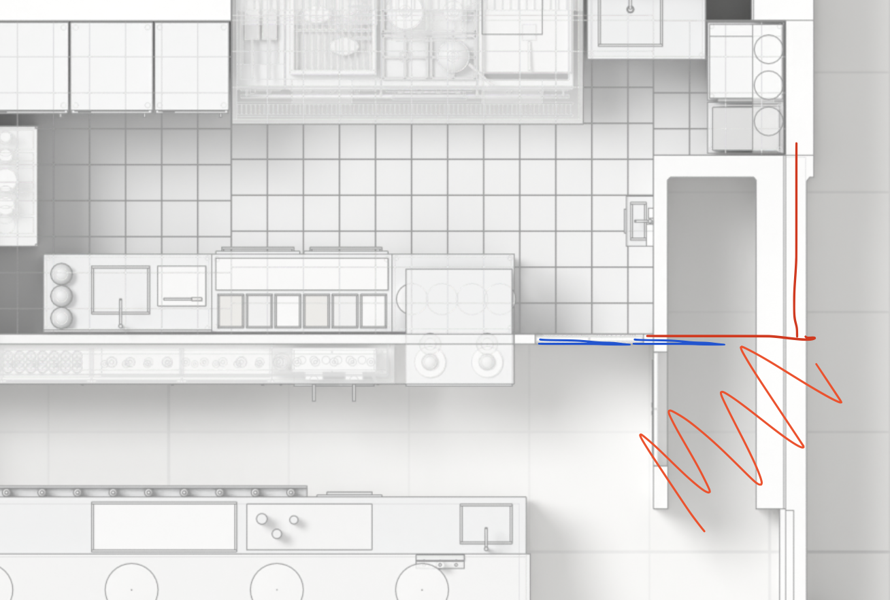
Avant (ta capture) : les portes, le coin à combler
Ce qui n'allait pas. Le « couloir » était la gaine sous celle du 1er. Le plan en faisait une boîte de 90 cm de large, fermée sur trois côtés et ouverte au sud : on aurait dit un couloir sans issue. Elle coupait le coin de la cuisine, et la porte de la cuisine, coincée contre elle, ne faisait que 90 cm.
Ce que j'ai fait. La gaine est retirée. Le mur de la cuisine file jusqu'à la façade droite, et le coin nord-est devient de la cuisine : après la plonge, une table propre, une étagère de vaisselle (assiettes, casiers à verres) et le lave-mains, avec une étagère à assiettes au-dessus. Le nu intérieur de la façade est redressé d'un seul tenant. Les portes de la cuisine sont replacées là où tu les as dessinées et élargies à 1,57 m : deux battants de chêne à double action, avec chacun un hublot et une plaque de poussée sur les deux faces, et des plinthes inox.
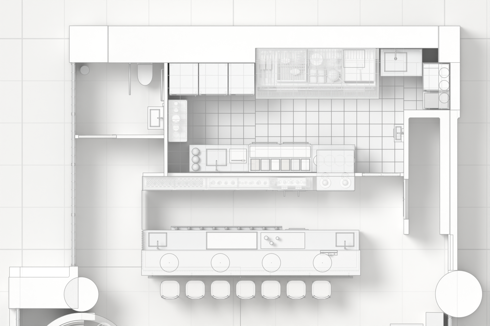
Avant : le fond vu du dessus
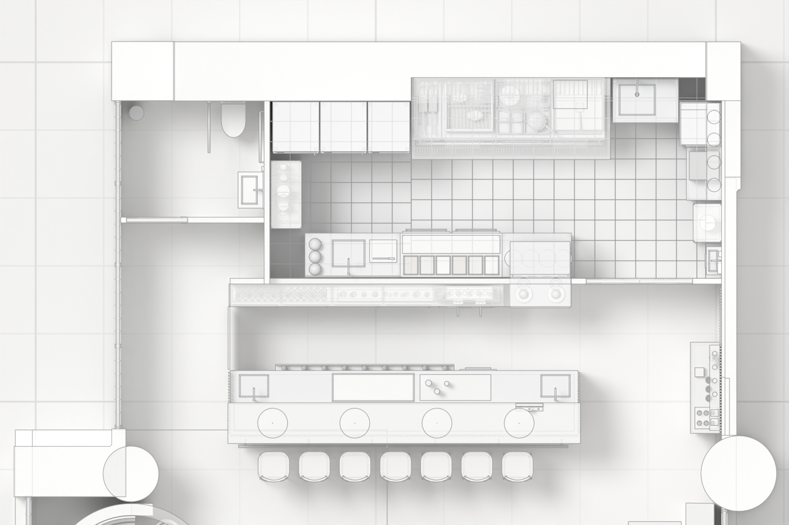
Après
2 · La place devant les portes : le poste de service
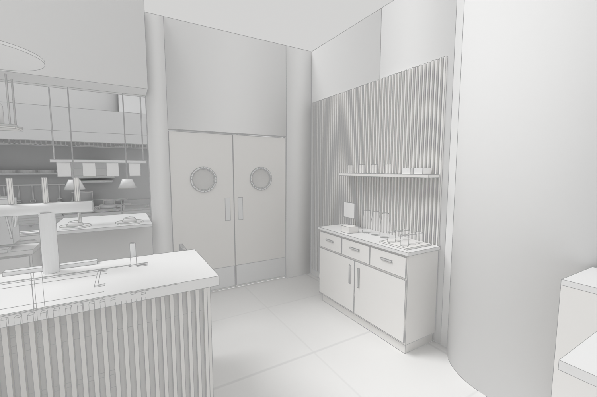
Depuis la salle : le poste de service et les portes
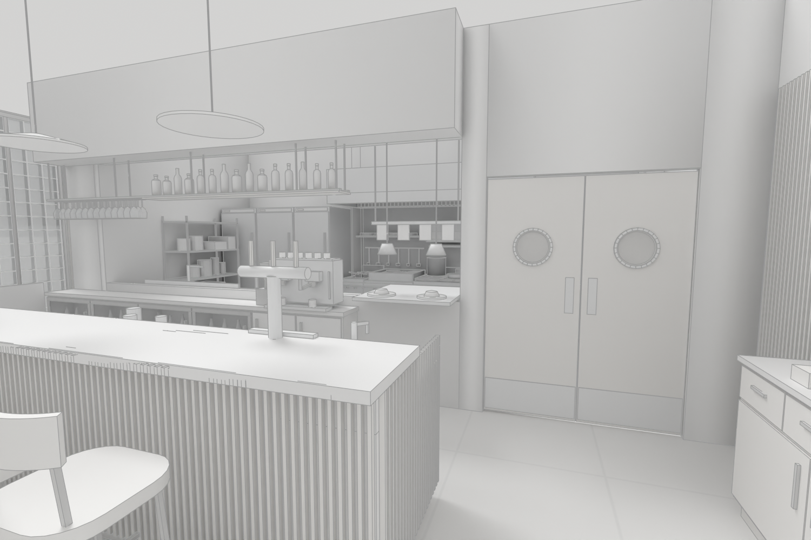
Le bout du bar, la passe et les portes
À la place de la gaine, entre le bout du bar, les portes et la façade, une
place de 2,1 × 2,7 m sert les serveurs. Le long du mur, en dehors du débattement des portes, il y a un meuble de
service en chêne : trois tiroirs à couverts, deux portes, un plateau de pierre. Dessus : la caisse (une tablette sur
son pied), des carafes et un plateau de verres. Le mur est habillé de tasseaux de chêne, comme celui de l'accueil, et
une étagère porte des verres et des serviettes. Les serveurs prennent les assiettes à la passe et les boissons au bout
du bar, puis repartent vers la salle sans croiser le barman.
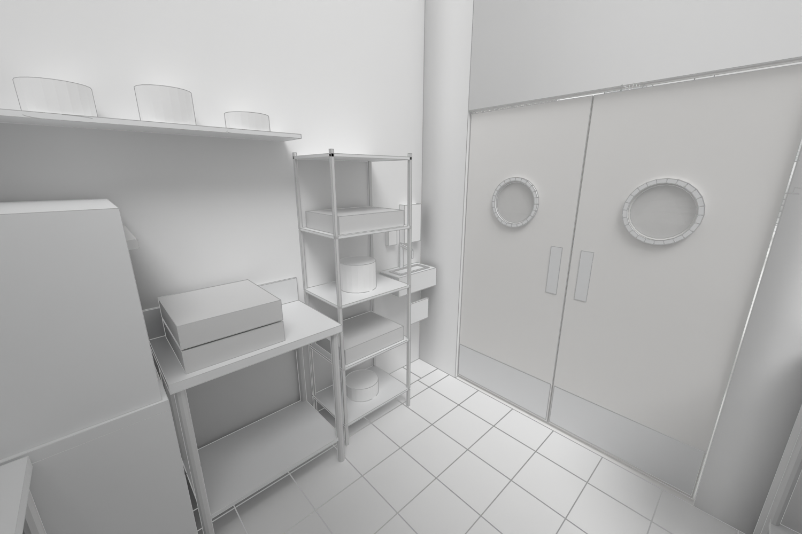
Le coin de la cuisine, jusqu'à la façade, et les portes vues de dedans
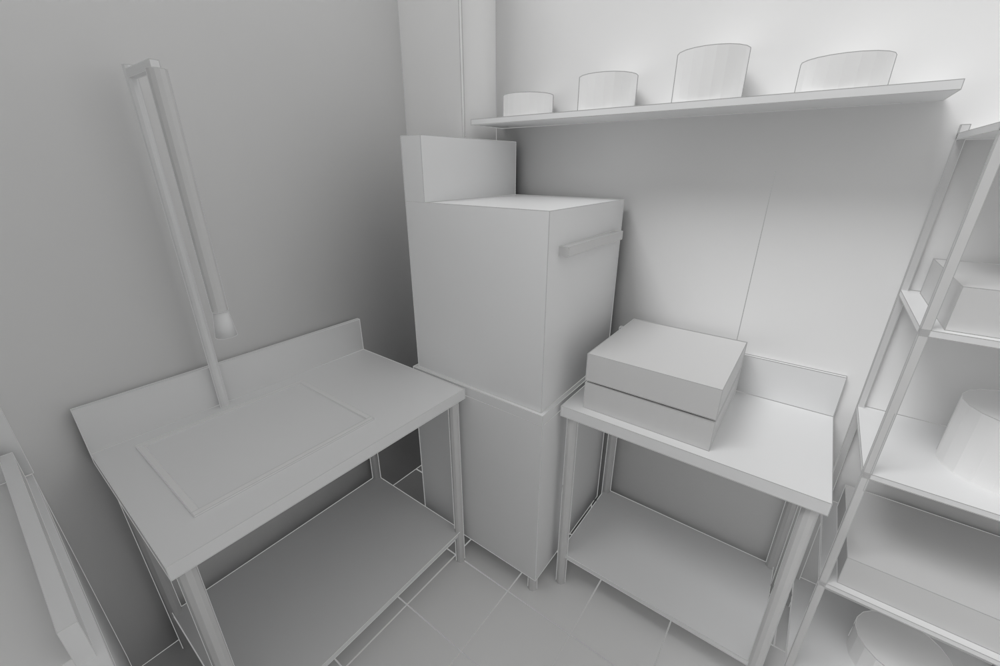
La plonge, puis la table propre le long de la façade
3 · Le bar et la cuisine ouverte
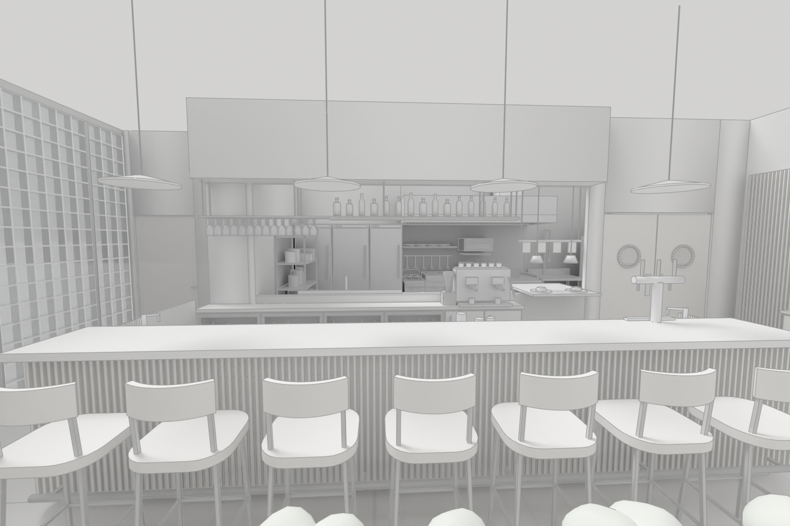
Depuis la salle
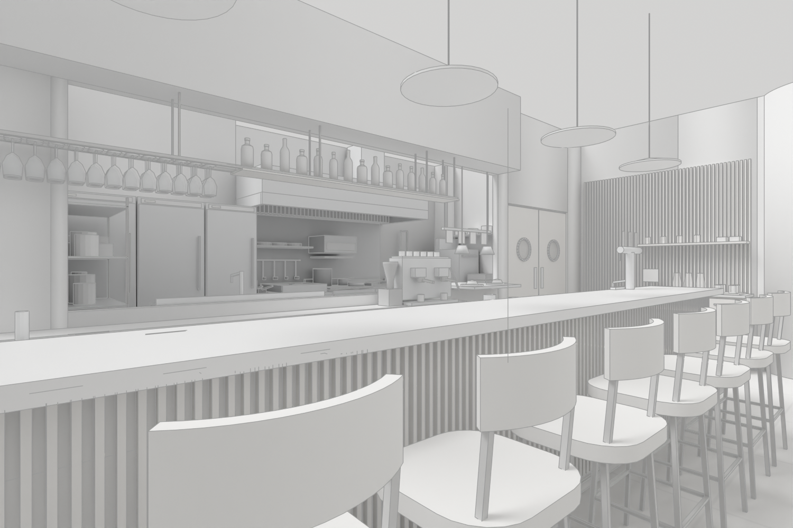
Au bout du comptoir
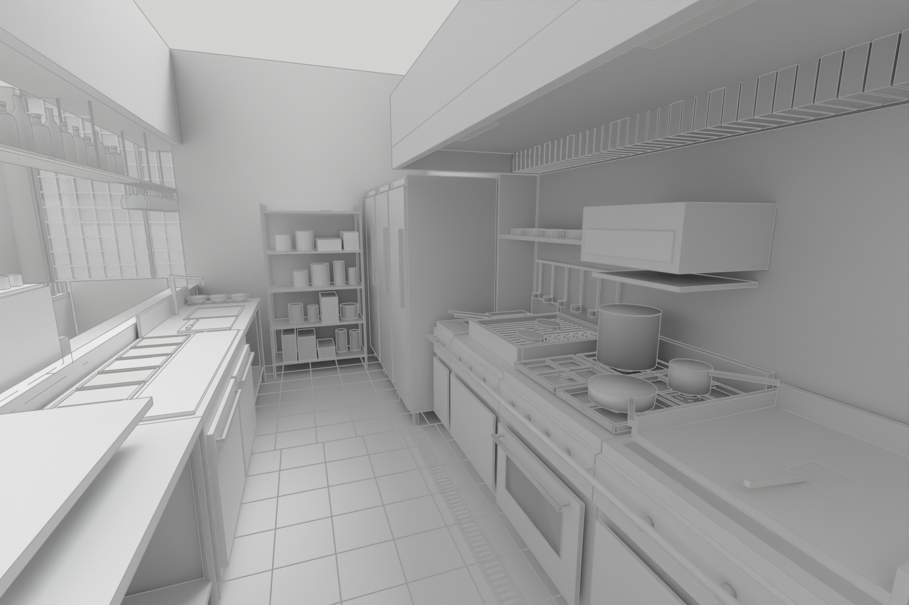
La ligne de cuisson, depuis les portes
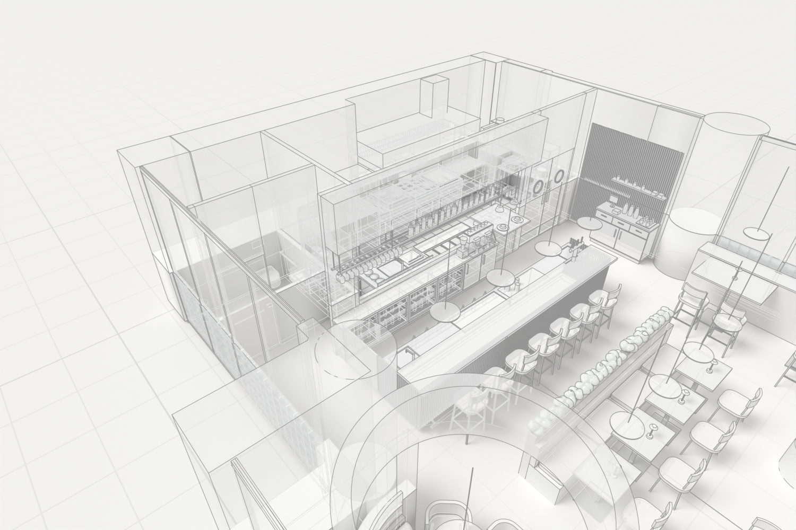
Comme sur la carte (style fantôme)
4 · Dans la carte
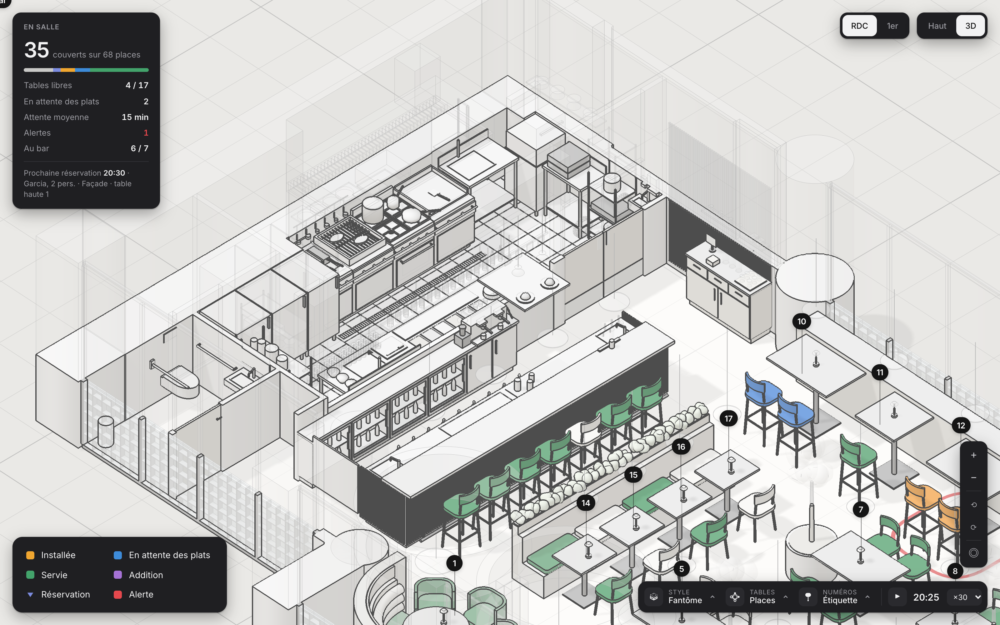
La carte réexportée : la cuisine, le bar, le poste de service
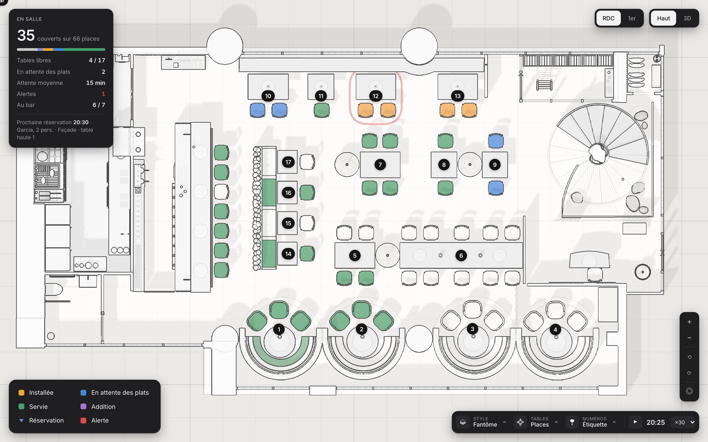
La vue du haut
Les modèles de la carte sont réexportés avec la cuisine ouverte : le
rez-de-chaussée, le 1er et le rez-de-chaussée sous sa dalle. L'étiquette « Bar » suit le comptoir raccourci, et les 7
tabourets restent suivis un par un. Une vérification sans intersection a été refaite : il ne reste que des assemblages
voulus.
Questions
La place devant les portes (le poste de service, le lambris de chêne) et les portes élargies te vont-elles ?
Au 1er, la boîte de l'ancienne « gaine d'ascenseur » n'a plus rien en dessous. Je la garde comme réserve fermée, ou je l'ouvre sur la salle ?
Ensuite : le plan final des deux étages, d'après le modèle, puis les captures de la carte.